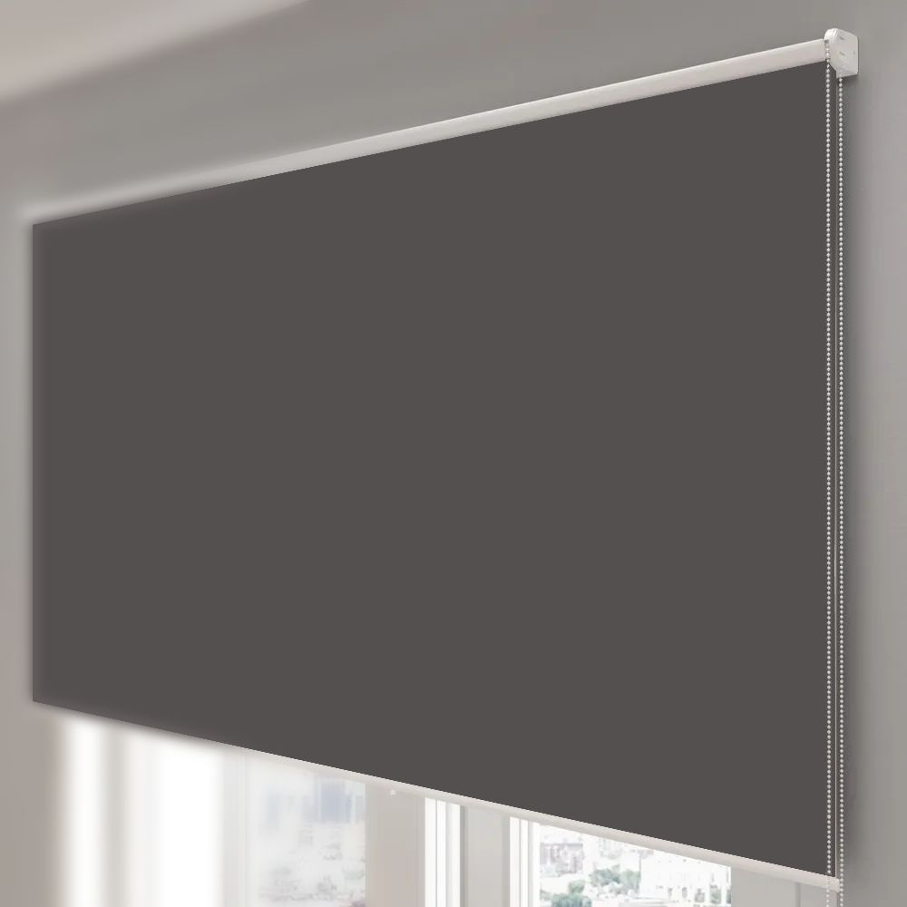

Cветозащитные системы блэкаут
Главная | День-ночь | Блэкаут | С фотопечатью | Плиссе | Жалюзи | Римские шторы | Шторы | Карнизы
Сегодня в городской среде эффективный контроль естественного света является ключевой задачей как для жилых, так и для коммерческих объектов. Блэкаут-рольставни выступают передовым решением, гарантирующим почти полную защиту помещений от солнечного излучения. Этот механизм регулирования освещенности объединяет простоту конструкции с высокой способностью поглощать свет, благодаря чему он активно применяется при оформлении офисных помещений, переговорных комнат и частных резиденций.
Технологические особенности и структура материала
Ключевое отличие систем блэкаут заключается в многослойной структуре полотна. В процессе производства текстиль проходит процедуру специального напыления или переплетения нитей, что позволяет создать плотный барьер для фотонов. В отличие от стандартных тканевых ролет, такие изделия не просто рассеивают свет, а полностью блокируют его проникновение. Использование полимерных составов в составе ткани также придает материалу дополнительные эксплуатационные преимущества, такие как устойчивость к выгоранию, пылеотталкивающие свойства и сохранение геометрии полотна при длительной эксплуатации.

Преимущества интеграции в рабочее и жилое пространство
Внедрение светозащитных систем данного типа позволяет оптимизировать микроклимат в помещении. Благодаря высокой плотности материала, рольшторы выступают эффективным тепловым барьером. В летний период они препятствуют перегреву интерьера, снижая нагрузку на системы кондиционирования, а в зимнее время способствуют удержанию тепла, минимизируя теплопотери через оконные проемы. С точки зрения эргономики, возможность полного затемнения критически важна для помещений, где используются проекционное оборудование или мониторы, так как отсутствие бликов значительно повышает продуктивность работы и снижает зрительное утомление.
Эстетическая составляющая и вариативность дизайна
Несмотря на выраженную функциональность, рольшторы блэкаут гармонично вписываются в любые интерьерные концепции. Современный рынок предлагает широкую палитру фактур и цветовых решений, позволяющих интегрировать систему в строгий минимализм, классический стиль или хай-тек. Компактность конструкции обеспечивает экономию полезного пространства, что особенно актуально для помещений с ограниченной площадью. Механизмы управления, будь то классический цепочный привод или автоматизированные системы с дистанционным контролем, подчеркивают статусность интерьера и обеспечивают максимальный комфорт в эксплуатации.